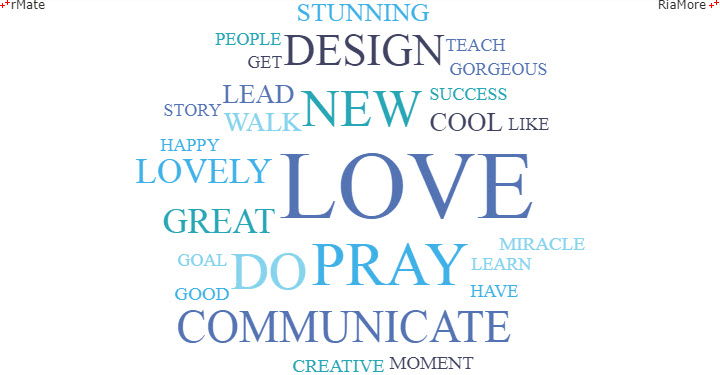
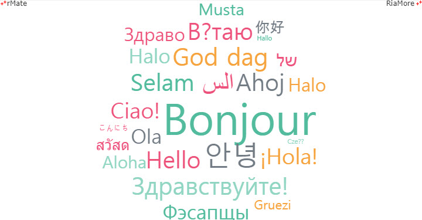

워드클라우드 차트
워드클라우드 차트는 각 단어의 중요도(인기도)를 한눈에 알아볼 수 있도록 높은 시각적 효과를 제공하는 차트입니다.
단어의 중요도는 데이터에 나타난 단어의 빈도수가 얼마나 높은지 혹은 단어에 주어진 수치값(가중치)이 얼마나 큰지에 따라서 결정되며 차트 상에는 단어의 크기와 색상을 달리하여 표현됩니다.
워드클라우드 차트는 <WordCloudChart> 노드의 series 속성값에 <WordCloudSeries> 노드를 설정하여 생성할 수 있습니다.
차트에 표현되는 단어의 크기는 <WordCloudSeries> 노드에 정의되는 다음 두 속성에 의해서 결정됩니다.
| 속성명 |
유효값 (*: 기본값) |
설명 |
| minFontSize |
숫자
기본값: 10
|
단어의 최소 폰트 크기를 지정합니다. |
| maxFontSize |
숫자
기본값: 100
|
단어의 최대 폰트 크기를 지정합니다. |
단어의 빈도수로 워드클라우드 차트 표현
다음은 데이터에 나타나는 단어의 빈도수에 의해서 차트에 표현되는 단어의 크기와 색상이 결정되는 워드클라우드 차트를 생성하기 위한 코드와 이를 적용해서 출력한 차트의 예제입니다.
단어의 빈도수에 따라서 적용될 색은 <WordCloudSeries> 노드의 <fills> 속성에 정의됩니다, 이 예제에서는 빈도수가 가장 높은 단어에 사용될 색으로 “#5473b3” 이 지정되었습니다.
data = ["PRAY","NEW","DO","DESIGN","CONCENTRATE","GREAT","LEAD","MOMENT","LOVE","DO","NEW","PRAY","GREAT","DESIGN","CREATIVE","LOVE","STUNNING","PRAY","BABY","LOVELY","DESIGN","GET","GOOD","NEW","COMMUNICATE","LOVE","NEW","SUCCESS","LOVELY","LOVE","LEARN","PRAY","LOVE","COOL","DO","LOVE","GORGEOUS","HAPPY","GOAL","STORY","LOVE","STUNNING","COMMUNICATE","PRAY","GREAT","HAVE","LOVE","PEOPLE","MIRACLE","COMMUNICATE","WALK","LOVE","DO","COOL","WALK","PRAY","LIKE","LOVELY","NEW","DESIGN","TEACH","LOVE","DO"];
<WordCloudChart showDataTips="true" selectionMode="single">
<series>
<WordCloudSeries>
<showDataEffect>
<SeriesInterpolate duration="1000"/>
</showDataEffect>
<fills>
<SolidColor color="#5473b3"/>
<SolidColor color="#3fb1e7"/>
<SolidColor color="#27a6b5"/>
<SolidColor color="#86d3ed"/>
<SolidColor color="#404362"/>
</fills>
</WordCloudSeries>
</series>
</WordCloudChart>

See the CodePen 알메이트 차트 - 단어의 빈도수로 워드클라우드 차트 표현
단어에 지정된 가중치로 워드클라우드 차트 표현
다음은 데이터에 지정된 각 단어의 수치값(가중치)에 의해서 차트에 표현되는 단어의 크기와 색상이 결정되는 워드클라우드 차트를 생성하기 위한 코드와 이를 적용해서 출력한 차트의 예제입니다.
사용되는 데이터에서 단어의 텍스트와 단어의 가중치에 해당하는 필드명은 <WordCloudSeries> 노드의 textField 속성과 weightField 속성에 각각 지정합니다.
| 속성명 |
유효값 (*: 기본값) |
설명 |
| textField |
텍스트
|
단어의 텍스트가 저장된 필드명을 지정합니다. |
| weightField |
텍스트
|
단어의 가중치가 저장된 필드명을 지정합니다. |
var chartData = [
{"text":"السلام", "value":13},
{"text":"Ahoj", "value":12},
{"text":"こんにち", "value":3},
{"text":"안녕", "value":14},
{"text":"Ola", "value":10},
{"text":"Cześć", "value":2},
{"text":"Здравствуйте!", "value":12},
{"text":"Hello", "value":12},
{"text":"Halo", "value":9},
{"text":"Здраво", "value":9},
{"text":"¡Hola!", "value":11},
{"text":"Halo", "value":10},
{"text":"God dag", "value":12},
{"text":"Gruezi", "value":6},
{"text":"Musta", "value":8},
{"text":"สวัสดี", "value":7},
{"text":"Вітаю", "value":12},
{"text":"Ciao!", "value":11},
{"text":"Selam", "value":12},
{"text":"שלום", "value":9},
{"text":"Aloha", "value":8},
{"text":"Bonjour", "value":23},
{"text":"Hallo", "value":2},
{"text":"你好", "value":7},
{"text":"Фэсапщы", "value":10}
];
<WordCloudChart showDataTips="true">
<series>
<WordCloudSeries textField="text" weightField="value">
<showDataEffect>
<SeriesInterpolate duration="1000"/>
</showDataEffect>
<fills>
<SolidColor color="#52bb9d"/>
<SolidColor color="#727b84"/>
<SolidColor color="#ed527c"/>
<SolidColor color="#f6a33d"/>
<SolidColor color="#ed527a"/>
<SolidColor color="#90d5c2"/>
</fills>
</WordCloudSeries>
</series>
</WordCloudChart>

See the CodePen 알메이트 차트 - 단어에 지정된 가중치로 워드클라우드 차트 표현
- 주의
브라우저와 클라이언트 PC 의 폰트 환경에 의해서 설치가 안되어 있거나 지원하지 않는 폰트라면 올바르게 출력되지 않을 수 있습니다.
동적 워드클라우드 차트 표현
다음은 setTimeout() 함수를 이용해서 3,000ms 마다 한 번씩 차트를 다시 생성하는 코드와 이를 적용해서 출력한 차트의 예제입니다.
이 예제에서 적용되는 데이터는 makeData() 함수를 이용해서 동적으로 생성됩니다.
function chartReadyHandler(id) {
document.getElementById(id).setLayout(layoutStr);
document.getElementById(id).setData(makeData());
setTimeout(changeData, 3000);
}
function makeData(){
var i, n,
chartData = [],
data = ["PRAY","NEW","DO","DESIGN","CONCENTRATE","GREAT","LEAD","MOMENT","LOVE","DO","NEW","PRAY","GREAT","DESIGN","CREATIVE","LOVE","STUNNING","PRAY","BABY","LOVELY","DESIGN","GET","GOOD","NEW","COMMUNICATE","LOVE","NEW","SUCCESS","LOVELY","LOVE","LEARN","PRAY","LOVE","COOL","DO","LOVE","GORGEOUS","HAPPY","GOAL","STORY","LOVE","STUNNING","COMMUNICATE","PRAY","GREAT","HAVE","LOVE","PEOPLE","MIRACLE","COMMUNICATE","WALK","LOVE","DO","COOL","WALK","PRAY","LIKE","LOVELY","NEW","DESIGN","TEACH","LOVE","DO"];
for(i = 0, n = data.length ; i < n ; i += 1){
chartData.push({
text : data[i],
weight : Math.floor(Math.random(10) * 100)
});
}
return chartData;
}
<WordCloudChart showDataTips="true">
<series>
<WordCloudSeries textField="text" weightField="weight">
<showDataEffect>
<SeriesInterpolate duration="1000"/>
</showDataEffect>
<fills>
<SolidColor color="#5586a4"/>
<SolidColor color="#40b2e6"/>
<SolidColor color="#ffa123"/>
<SolidColor color="#595c7b"/>
<SolidColor color="#ef8075"/>
<SolidColor color="#f8ba03"/>
<SolidColor color="#03b79a"/>
<SolidColor color="#a5d4e6"/>
<SolidColor color="#b79d7c"/>
<SolidColor color="#9e589e"/>
</fills>
</WordCloudSeries>
</series>
</WordCloudChart>
See the CodePen 알메이트 차트 - 동적 워드클라우드 차트 표현